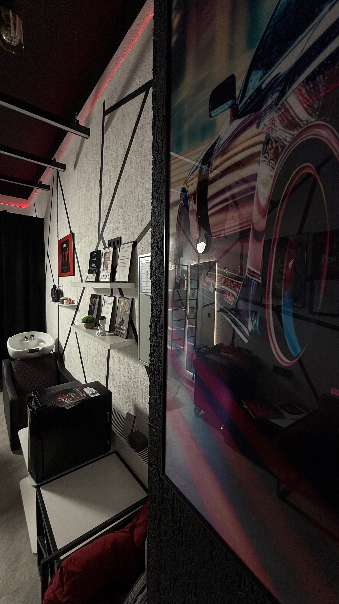
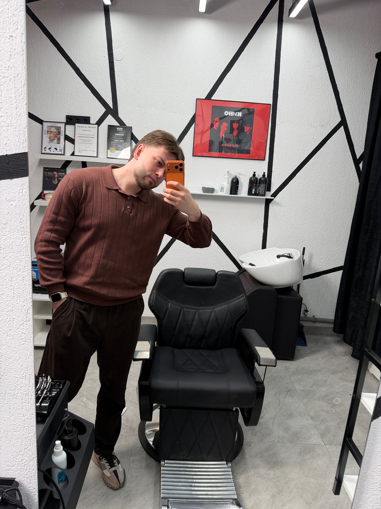
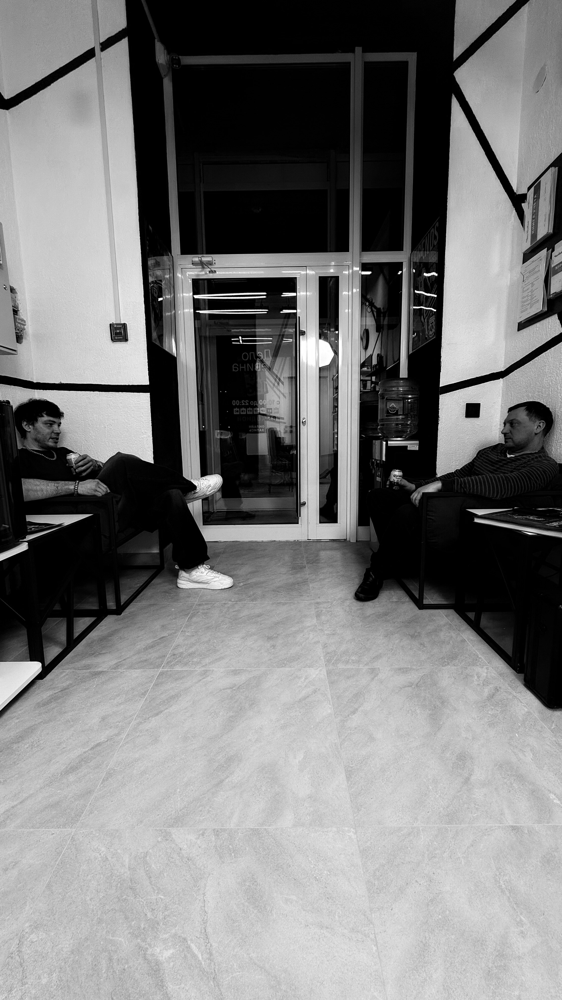
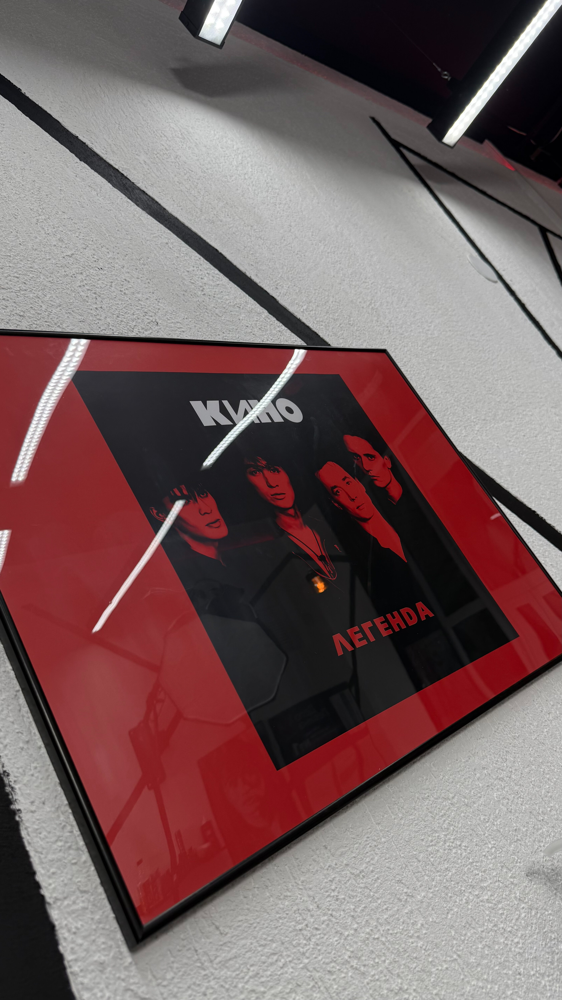
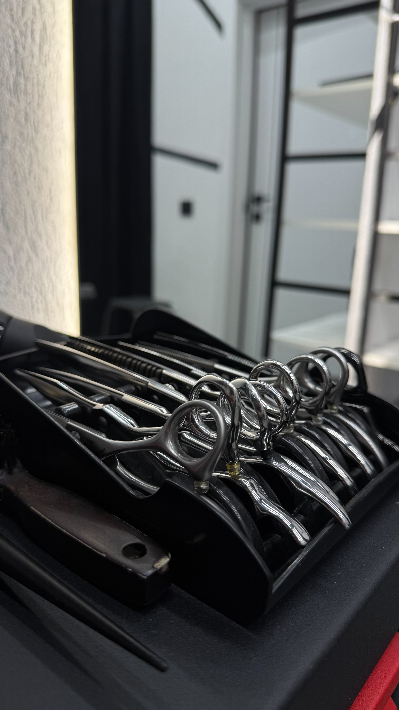

барбершоп одного мастера
Один мастер. Одно кресло. Одна ответственность. Герман Левин сам стрижёт, сам бреет и сам отвечает за результат — стрижка не «повезёт / не повезёт», она повторяемая.

Не сеть. Не салон.
Один мастер, который помнит вашу голову.
«Дело Левина №196» — это моно-барбершоп: всё делает один человек. Вы приходите не «к свободному мастеру», а к Герману Левину — он ведёт вас от первой стрижки, знает, как ложится волос и что сделать, чтобы форма держалась до следующего визита.
Семь месяцев работы — 5.0 на Яндекс Картах и 74 оценки. Это не накрутка и не акция: это люди из Уют-Сити и Березовского, которые вернулись и написали сами.




— проведите курсором по фото: прожектор следователя включается в темноте
Точный прайс и состав услуг — при записи в группе VK: Герман отвечает лично.
За семь месяцев работы — идеальный рейтинг на Яндекс Картах. Каждый отзыв написан реальным клиентом: соседи по ЖК, отцы с сыновьями, те, кто приехал через полгорода и остался.
Лучший отзыв — цифра: 65 человек написали сами, никого не просили.
Читать все 65 отзывов на Яндекс Картах →ул. Победы, 3
ЖК «Уют-Сити» — вход с Малахитового бульвара
Березовский, Свердловская область. Парковка — во дворе ЖК. Запись ведётся в группе VK: там актуальные окна, там отвечает сам Герман.